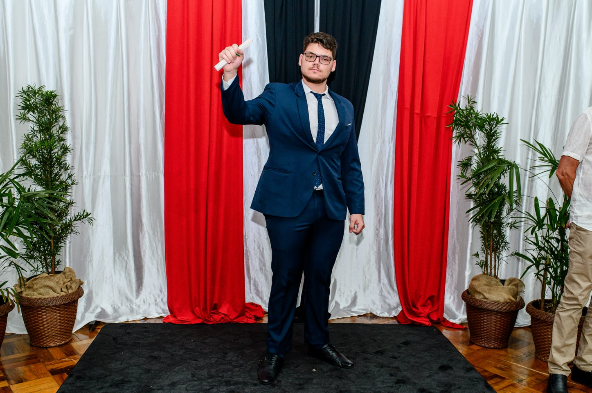
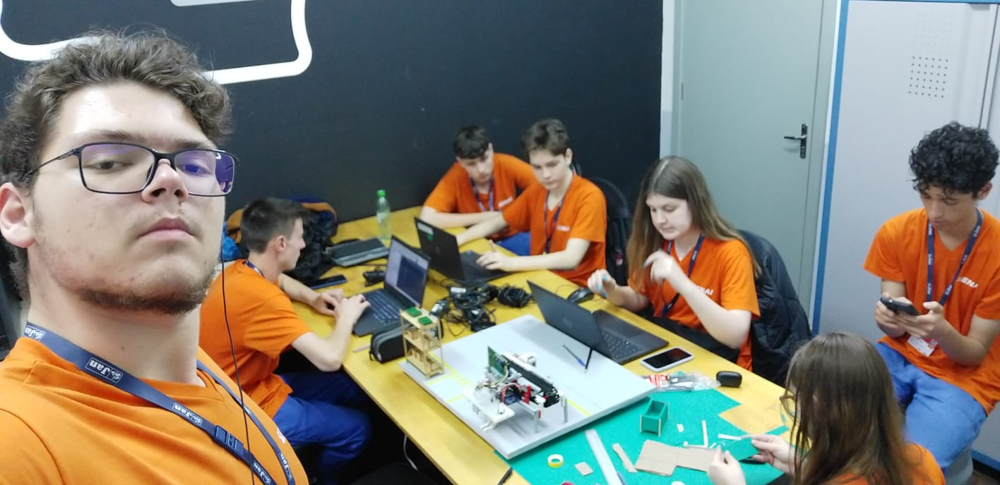
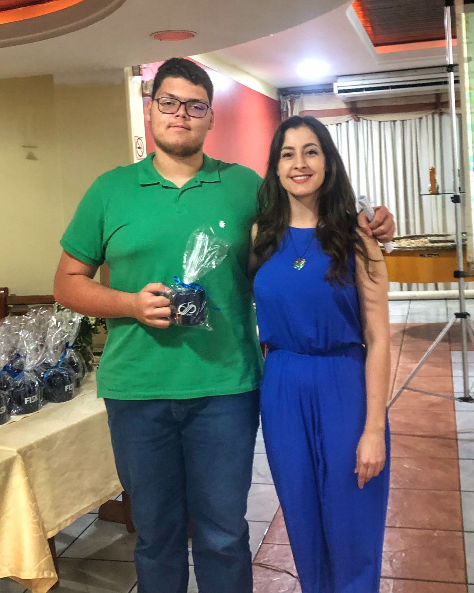

Minha Jornada
Começei meus estudos na Escola de Ensino Fundamental Sinodal Sete de Setembro, um pouco mais tarde começei a frequentar a escola de idiomas FISK, meu ensino médio começou em 2023 no Instituto Estadual de Educação São Francisco Solano, me formei na FISK também em 2023 e em 2024 começei o curso de Operador de Processos Logísticos Industriais pelo SENAI, onde tive a oportunidade de participar do Projeto Integrador de 2024, em 2025 fui contratado como estagiário de nível médio na área de logística pela empresa JAN S/A, em 2026 começei a faculdade de Ciência da Computação na Universidade de Passo Fundo, também fui recontratado como estágiario de nível superior pela mesma empresa.
Objetivos
Meus objetivos atualmente são começar a trabalhar na área da tecnologia, desenvolver um jogo (foi um dos vários motivos que escolhi está área) e começar a realizar projetos em casa para aumentar meu conhecimento na área.

Formatura Solano

Projeto Integrador 2024

Formatura FISK